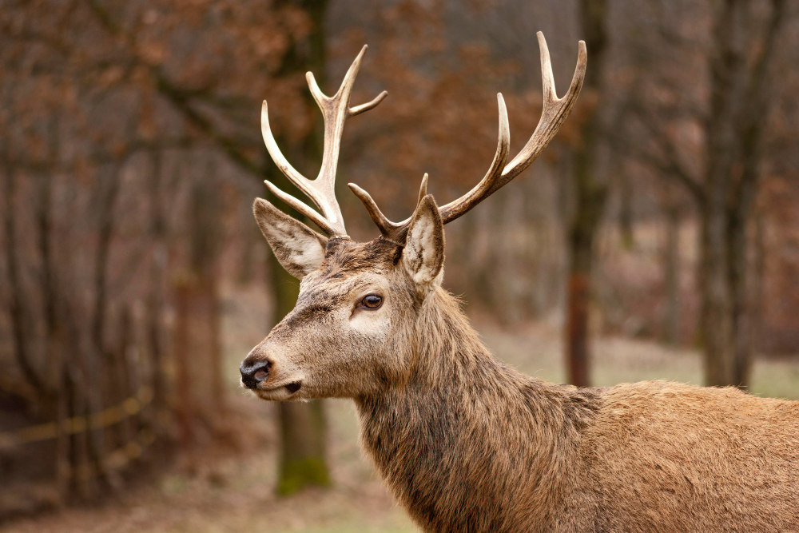
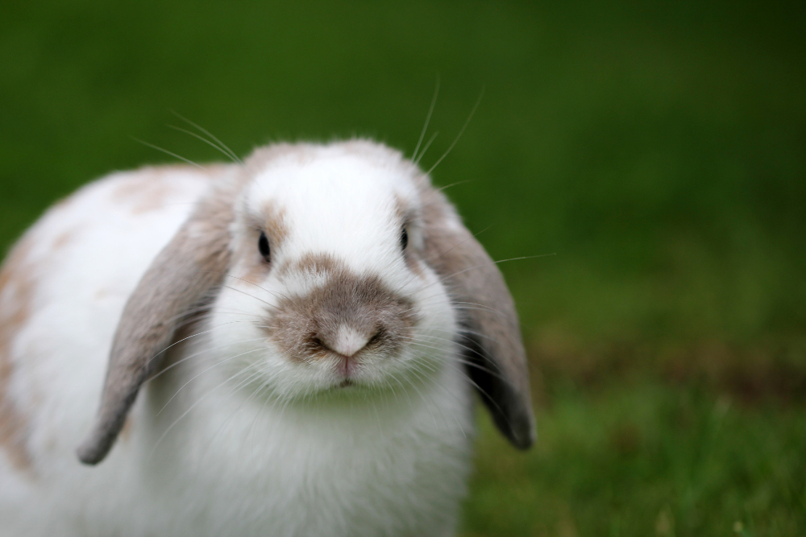
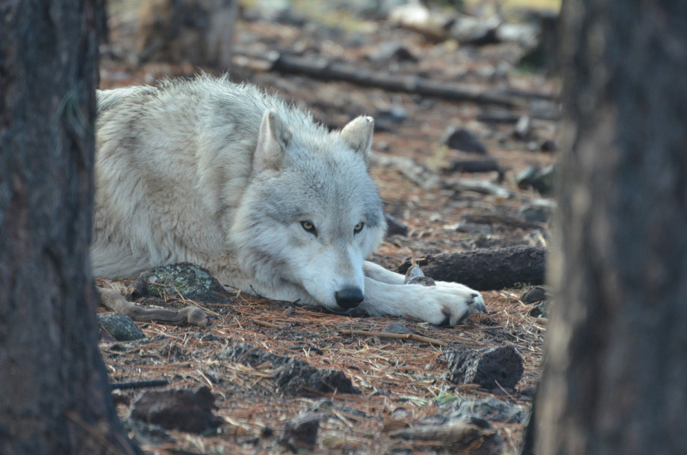

Ciervo
Con su andar sereno y majestuosa cornamenta, el ciervo simboliza la gracia y la libertad. Habita en los bosques y praderas, donde su presencia evoca la belleza y tranquilidad de la naturaleza.
¡Saber más!

Conejo
Pequeño y ágil, el conejo es un símbolo de velocidad y curiosidad. Con su suave pelaje y grandes orejas, recorre campos y bosques, siempre alerta y lleno de energía.
¡Saber más!

Lobo
Fuerte y leal, el lobo recorre los bosques y montañas en manada, guiado por su instinto y unidad. Su aullido resuena en la noche, símbolo de libertad, valentía y el poder de la naturaleza salvaje.
¡Saber más!
Cordero
Con su lana esponjosa y su mirada tierna, el cordero es un símbolo de paz y pureza. Tranquilo y sociable, recorre los campos en armonía, reflejando la dulzura de la naturaleza.
¡Saber más!